Latest actual-route evidence shows the illustrated theme, gold-framed round statistics and Result info sheet. Earlier refinement captures are retained for comparison and labelled by stage; component fixtures are not live results.
Android validation remains blocked. See the report for untested or unavailable states; this gallery does not by itself certify release acceptance.
Visible stats · theme and gold-framed rounds
Actual route · 402×874 · large
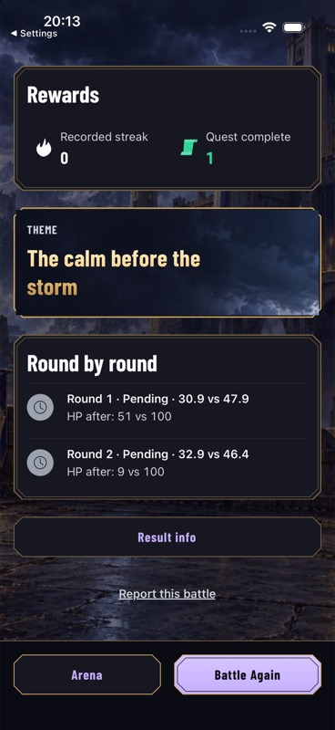
Existing completed practice defeat. Illustrated theme and round statistics are directly visible; no expansion. Standard-phone Close returned to this scroll position. The existing bot-round Pending label is documented in the report.
Visible stats · small-phone theme and rounds
Actual route · 375×812 · large
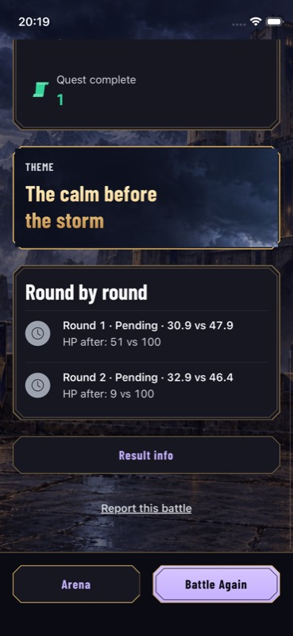
Actual result with 20-point section gaps, matching gold frames, illustrated wrapping theme, Result info and reachable footer. No generation or purchase.
Visible stats · Result info sheet
Actual route · 402×874 · large
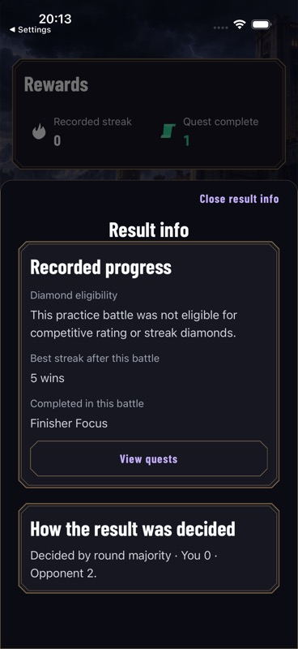
Actual recorded progress and deciding explanation use the already-loaded model. Fixed heading/Close; View quests was verified to dismiss then reach Arena.
Visible stats · small-phone Result info
Actual route · 375×812 · large
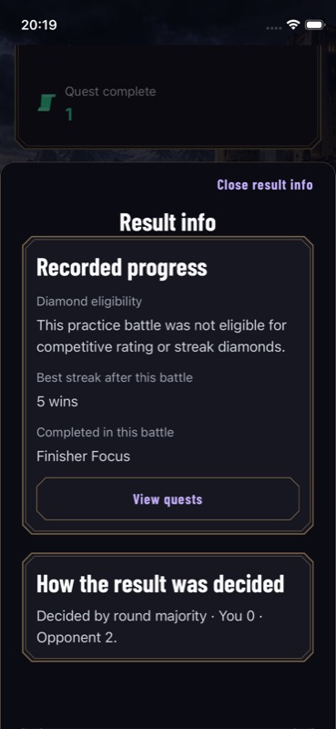
Actual result sheet opens fully usable without dragging. The theme explanation is absent from the main plaque and available here. Close preserves the result page.
Visible stats · small-phone theme at accessibility text
Actual route · 375×812 · accessibility-large
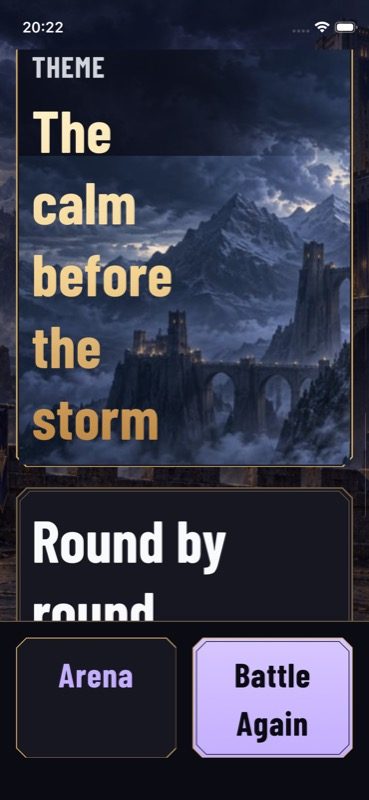
Real OS text sizing. Theme grows and wraps over existing mapped art; page scrolls and footer remains reachable. No invented title or values.
Visible stats · small-phone rounds at accessibility text
Actual route · 375×812 · accessibility-large
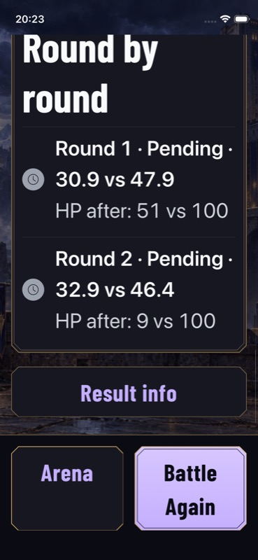
Actual scores/HP and Result info remain readable through scrolling. Footer labels wrap naturally. Existing bot-round Pending behavior is unchanged.
Visible stats · small-phone sheet at accessibility text
Actual route · 375×812 · accessibility-large
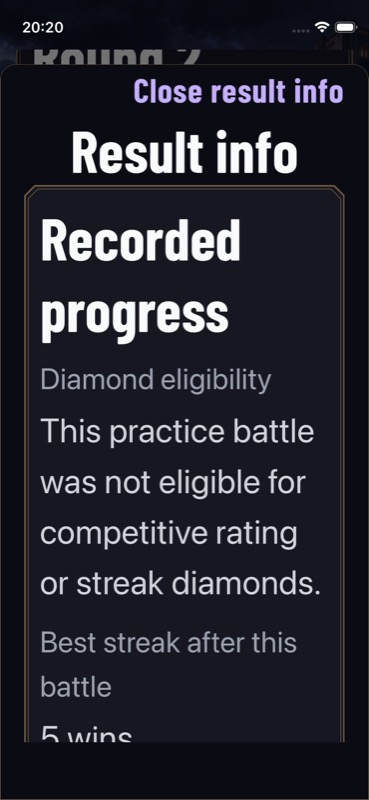
Actual open sheet survives live OS text-size change; fixed title/Close remain reachable while recorded progress grows.
Visible stats · sheet body scrolls beneath fixed heading
Actual route · 375×812 · accessibility-large
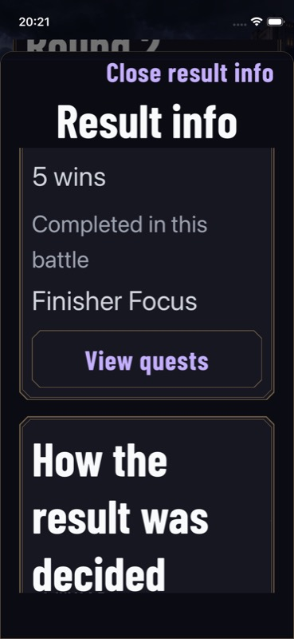
Actual sheet scrolled to quest navigation and deciding section; fixed title/Close remain stationary. The complete deciding paragraph was inspected on further scroll.
Visible stats · standard-phone theme at accessibility text
Actual route · 402×874 · accessibility-large
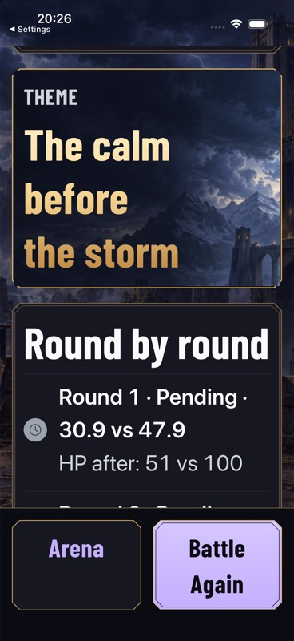
Actual result, wrapping gold title and mapped banner with natural panel growth; footer remains reachable.
Visible stats · standard-phone rounds at accessibility text
Actual route · 402×874 · accessibility-large
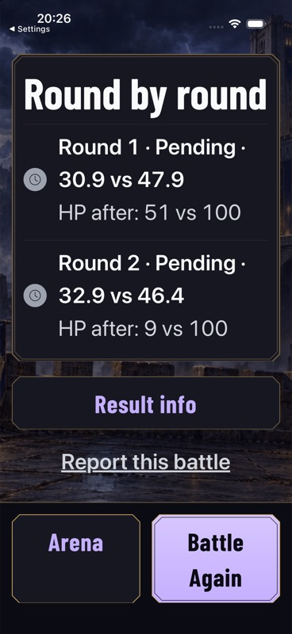
Actual complete round panel at large OS text size. Scores/HP, Result info and safety remain readable; the known Pending label is unchanged.
Visible stats · standard-phone sheet at accessibility text
Actual route · 402×874 · accessibility-large
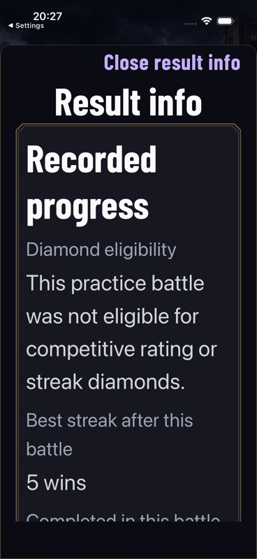
Actual Result info with fixed heading and Close. Content grows naturally and scrolls; no additional requests are initiated by opening the sheet.
Before · verdict and cinematic
Actual route · 375×812 · large
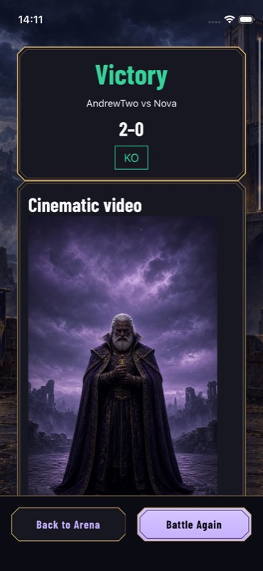
Existing AndrewTwo vs Nova result; no generation or purchase performed.
Before · rewards and sharing
Actual route · 375×812 · large
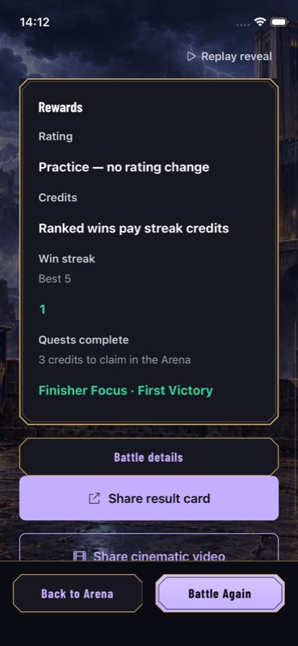
Existing AndrewTwo vs Nova result; no generation or purchase performed.
Before · verdict and cinematic
Actual route · 402×874 · large
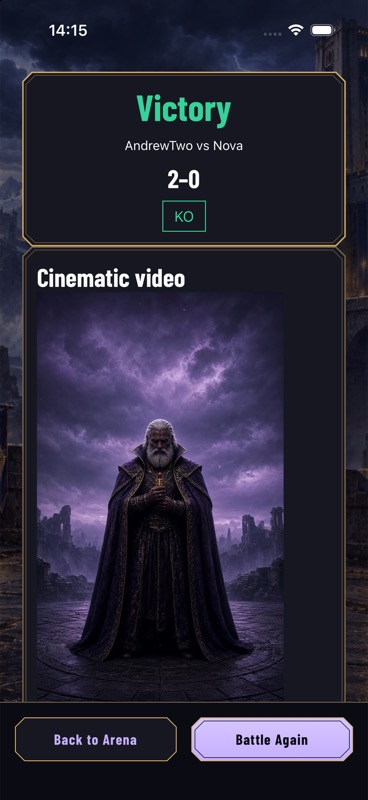
Existing AndrewTwo vs Nova result; no generation or purchase performed.
Before · rewards and sharing
Actual route · 402×874 · large
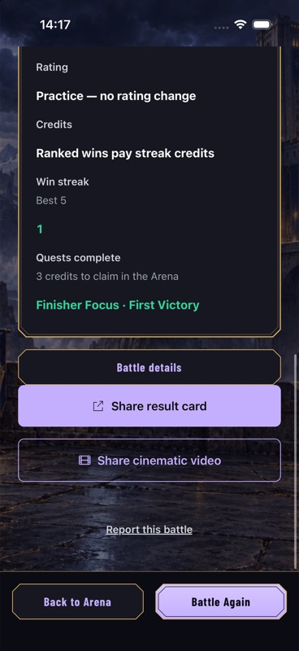
Existing battle viewed from Battles; no media generation or purchase.
After · no contest and Unicode names
Component fixture · 375×812 · large
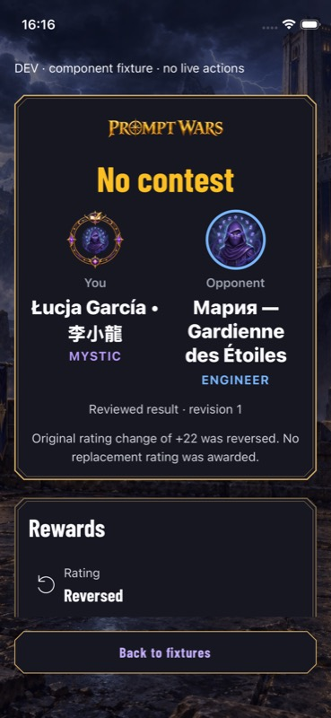
Final synthetic no-contest fixture: long Unicode identity, no original score/HP/KO/winner. A known original +22 ranked contribution supports the reversal wording. No live review or award occurred.
After · accessibility text and Unicode
Component fixture · 375×812 · accessibility-large
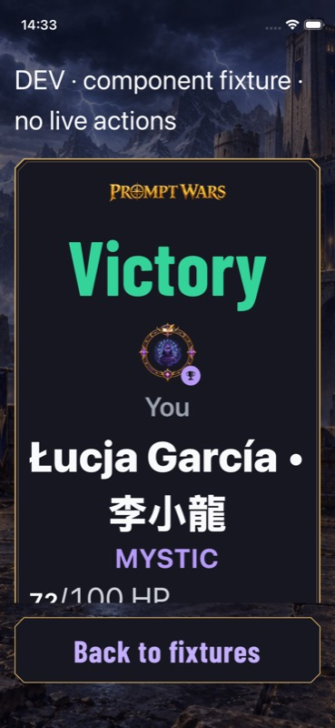
Actual OS accessibility text category. Fighters stack and grow naturally; persistent fixture footer remains reachable. Bundled artwork and synthetic result.
After · accessibility score and opponent
Component fixture · 375×812 · accessibility-large
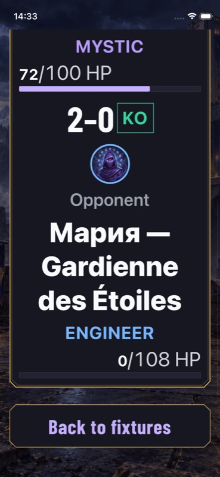
Same component fixture scrolled: unbroken score/KO, complete long opponent name and known HP; footer remains pinned.
After · defeat, long name and media recovery
Component fixture · 375×812 · large
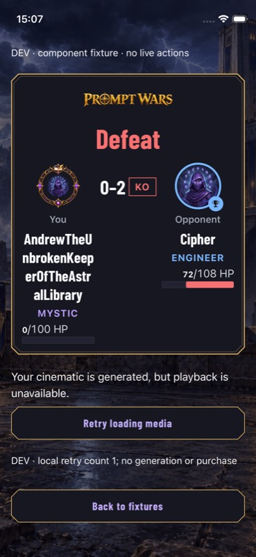
Synthetic defeat and signing failure, bundled equipment. Unbroken long name wraps; retry is a local counter and cannot generate or purchase.
After · native full-screen controls
Actual route · 402×874 · large
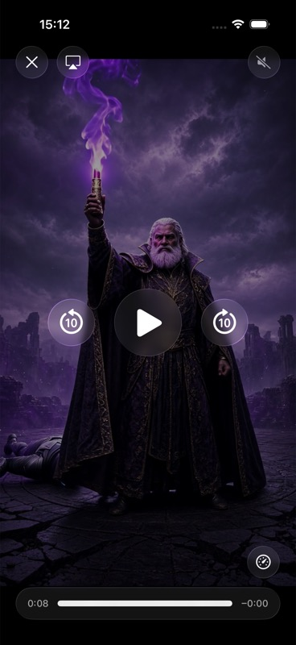
Actual approved existing Round 2 video at completion; native transport/Close/mute exposed. OS Reduce Motion on. No media generation or purchase.
After · return from cinematic
Actual route · 402×874 · large
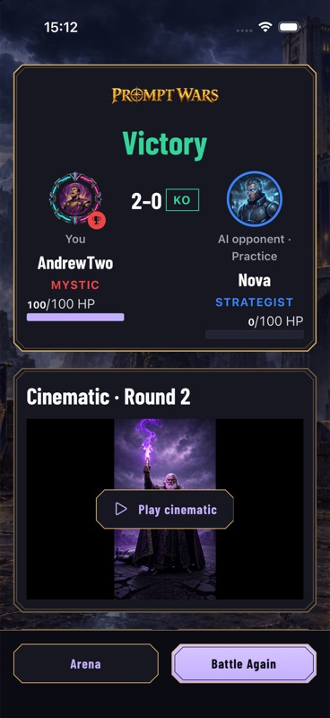
Actual result after native Close; same scroll position, paused contained preview and persistent footer. OS Reduce Motion on.
After · free reveal with Reduced Motion
Actual route · 402×874 · large
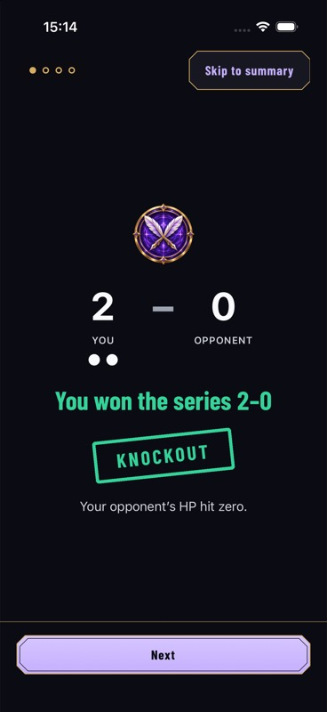
OS Reduce Motion enabled. Existing free reveal remains manually paced with Next and Skip. No new battle or media generation.
After · small iPhone verdict and cinematic entry
Actual route · 375×812 · large
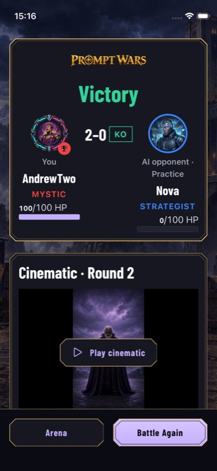
Actual existing practice result with frozen equipment and actual Round 2 cinematic. Default OS text size. No purchase or generation.
After · actual verdict at accessibility text
Actual route · 375×812 · accessibility-large
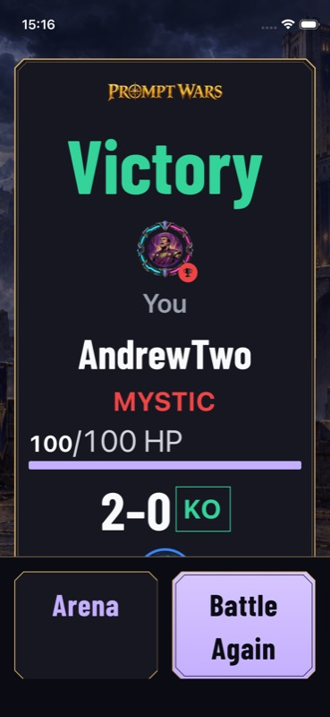
Actual result after live OS text-size change; content reflows and scrolls with footer actions visible. No purchase/generation.
After · actual cinematic at accessibility text
Actual route · 375×812 · accessibility-large
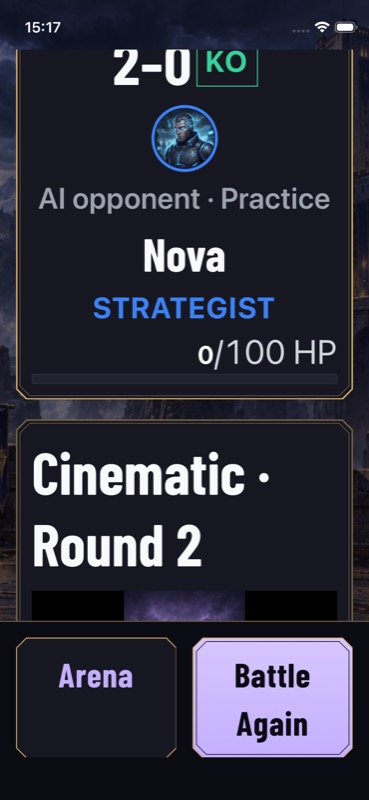
Actual result after live OS text-size change; content reflows and scrolls with footer actions visible. No purchase/generation.
After · reviewed rewards, retained diamonds
Component fixture · 375×812 · large
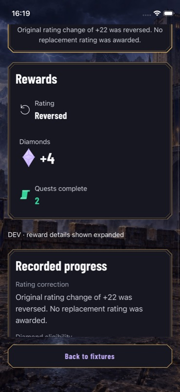
Synthetic no-contest state: original rating/streak suppressed; four retained diamonds and two completed quests remain separate. Details forced open only by the fixture. Historical fixture capture; the current fixture uses visible rounds and Result info.
After · unavailable rewards and pending media
Component fixture · 375×812 · large
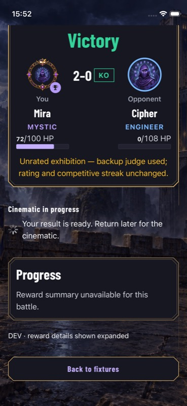
Synthetic unrated result. Missing reward summary is explicitly unavailable, distinct from pending cinematic generation and from zero awards.
After · cinematic, sharing and compact rewards
Actual route · 402×874 · large
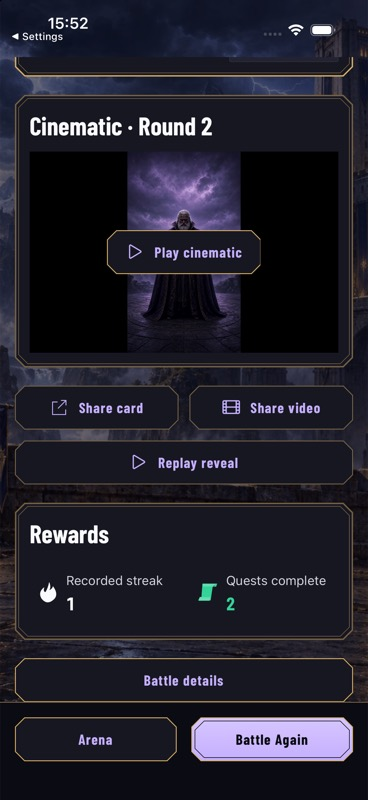
Actual existing practice series. Two completed quests and recorded streak remain compact; no invented diamonds or claim promise. Shared buttons and footer remain reachable.
Prior layout · expanded historical reward details
Actual route · 402×874 · large
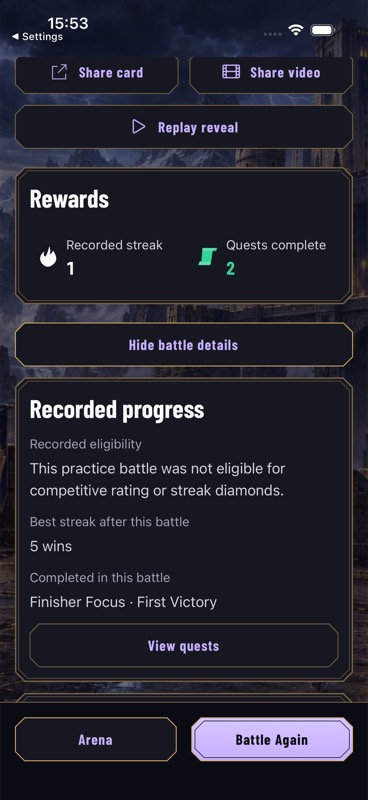
Historical pre-follow-up evidence. This expansion has been replaced by visible theme/rounds and Result info. The earlier exit fix remains covered separately.
After · small-phone sharing and rewards
Actual route · 375×812 · large
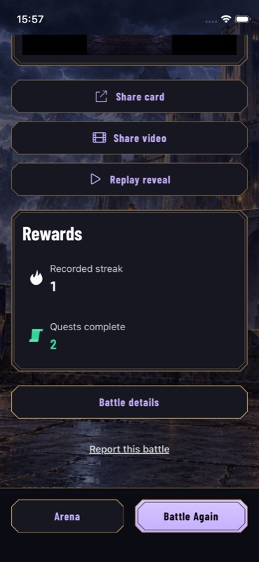
Actual practice result: share actions and compact reward cells stack at 375 points. Battle details and persistent Arena/Battle Again remain reachable.
After · actual rewards with accessibility text
Actual route · 375×812 · accessibility-large
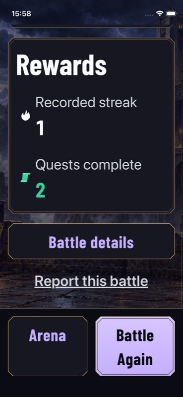
Real OS text-size change on the existing result. Labels and values remain visible, details scroll naturally, and both footer actions remain reachable.